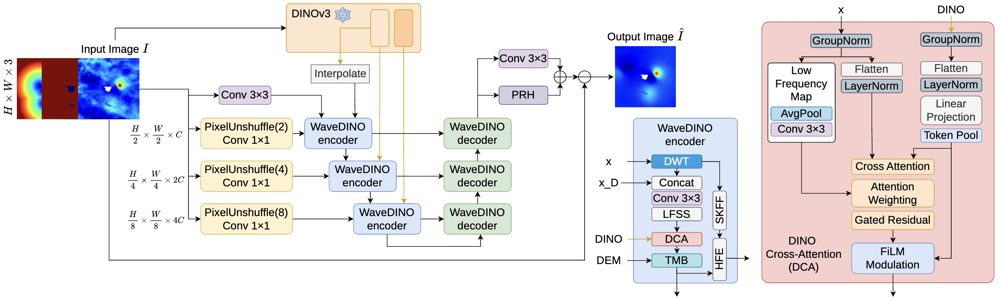
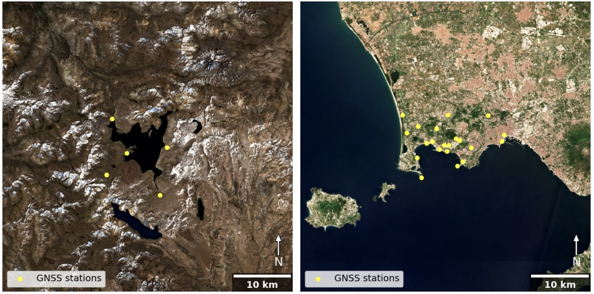
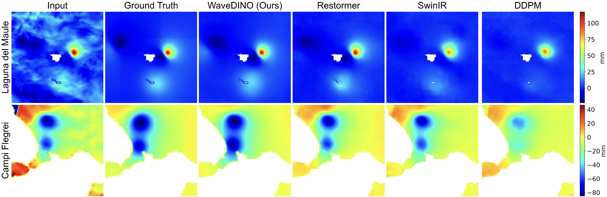
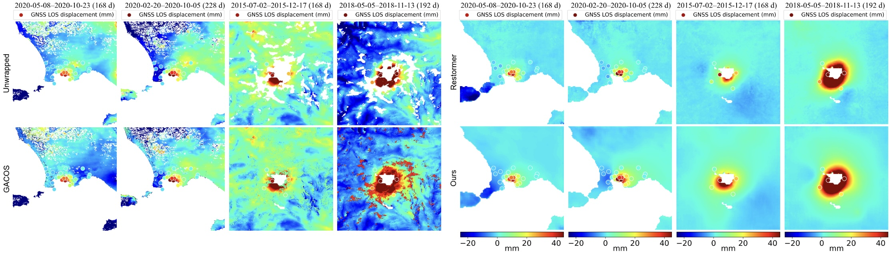

Interferometric Synthetic Aperture Radar (InSAR) enables effective monitoring of volcanic deformation; however, the observed signals are often corrupted by atmospheric phase delays, seasonal surface changes, and decorrelation effects. Existing atmospheric correction methods, such as numerical weather model–based methods, can reduce these effects but do not consistently remove atmospheric artefacts and may introduce residual biases.
To address these limitations, we propose a novel learning-based method for denoising unwrapped InSAR interferograms, using a hybrid training strategy that combines physically motivated synthetic deformation with real atmospheric noise. Specifically, we introduce WaveDINO, a wavelet-based multi-scale denoising framework conditioned on frozen DINOv3 foundation-model features and terrain information. Training uses synthetic magma-source deformation superimposed on short-term interferograms to expose the network to realistic atmospheric statistics while retaining known ground truth.
Performance is evaluated on both controlled synthetic data and long-term real interferograms from Laguna del Maule (Chile) and Campi Flegrei (Italy), with independent GNSS measurements used for validation. WaveDINO consistently outperforms competing models, improving agreement with GNSS measurements and reducing mean GNSS misfit by approximately 3% and 19% at the two sites respectively, while surpassing weather-model-based corrections.
Sentinel-1 IW interferograms are processed automatically by the LiCSAR pipeline and referenced via LICSBAS for the COMET Volcano Portal. For each volcano we analyse a 50×50 km region of interest at 50 m pixel spacing (500×500 pixels), spanning 622 epochs at Laguna del Maule (Oct 2014 – Aug 2024) and 1008 epochs at Campi Flegrei (Oct 2014 – Sep 2025). Independent ground truth is provided by 5 GNSS stations at Laguna del Maule and 19 GNSS stations at Campi Flegrei.
WaveDINO is a wavelet-based multi-scale denoiser that explicitly targets the spatially coherent, non-stationary statistics of tropospheric phase delay. The input unwrapped phase is decomposed into multi-resolution sub-bands so that broad atmospheric components can be modelled primarily in the low-frequency pathway, while fine deformation-related structure is preserved through high-frequency skip connections. Encoder channels follow 32 → 64 → 128, with the decoder mirrored.

Silicic volcanic system at 70.492°W, 36.058°S in the southern Andes. Rugged high-altitude topography with seasonal snow cover — conditions that promote strong stratified tropospheric delays and coherence loss. Persistent uplift exceeding several centimetres per year suggests significant shallow magma accumulation. Tracks 18A and 83D, 622 epochs (Oct 2014 – Aug 2024).
Densely monitored caldera west of Naples (14.139°E, 40.827°N) in a low-relief, coastal and urbanised environment. Persistent hydrothermal and magmatic unrest (bradyseism) produces spatially heterogeneous atmospheric artefacts. Tracks 22D, 44A and 124D, 1008 epochs (Oct 2014 – Sep 2025).

(Left) Laguna del Maule, Chile. (Right) Campi Flegrei, Italy.
We hold out synthetic deformation maps and superimpose them on real short-baseline interferograms to obtain a controlled test set with known ground truth. WaveDINO achieves the best perceptual (LPIPS), structural (SSIM) and pixel-wise (MSE, L3, ABS) scores at both volcanoes, indicating strong atmospheric attenuation without oversmoothing the deformation signal.
Table I. Image-quality metrics on synthetic data computed over the full image.
Bold and underline denote the best and second-best results in each column.
| Method | Laguna del Maule | Campi Flegrei | ||||||||
|---|---|---|---|---|---|---|---|---|---|---|
| MSE ↓ | LPIPS ↓ | SSIM ↑ | L3 ↓ | ABS ↓ | MSE ↓ | LPIPS ↓ | SSIM ↑ | L3 ↓ | ABS ↓ | |
| UNet | 54.89 | 0.25 | 0.84 | 0.0109 | 4.99 | 35.30 | 0.29 | 0.73 | 0.0088 | 3.37 |
| Diffusion (DDPM) | 93.64 | 0.47 | 0.71 | 0.0140 | 6.58 | 66.52 | 0.51 | 0.62 | 0.0117 | 4.48 |
| SwinIR | 69.11 | 0.34 | 0.79 | 0.0125 | 5.74 | 40.53 | 0.35 | 0.72 | 0.0097 | 3.83 |
| Restormer | 33.77 | 0.27 | 0.85 | 0.0090 | 3.95 | 30.42 | 0.46 | 0.64 | 0.0081 | 3.34 |
| WaveMamba | 44.13 | 0.16 | 0.88 | 0.0099 | 4.55 | 46.29 | 0.25 | 0.76 | 0.0094 | 3.70 |
| WaveDINO (Ours) | 30.12 | 0.12 | 0.91 | 0.0080 | 3.81 | 26.44 | 0.09 | 0.92 | 0.0063 | 2.87 |
MSE in mm2; L3 and ABS in mm. SSIM is unitless.
Table II (top). MSE on synthetic data, binned by ground-truth deformation magnitude.
Lower is better. Bold = best, underline = second-best per column.
| Method | Laguna del Maule | Campi Flegrei | ||||||||
|---|---|---|---|---|---|---|---|---|---|---|
| <10 | 10–20 | 20–30 | >30 | Mean | <10 | 10–20 | 20–30 | >30 | Mean | |
| UNet | 27.76 | 64.39 | 86.76 | 120.02 | 74.73 | 29.92 | 58.57 | 73.39 | 112.79 | 68.67 |
| Diffusion (DDPM) | 39.94 | 89.13 | 138.63 | 247.14 | 128.71 | 63.22 | 103.25 | 132.91 | 204.29 | 125.92 |
| SwinIR | 28.31 | 71.76 | 108.32 | 169.38 | 94.44 | 36.02 | 61.29 | 79.05 | 105.56 | 70.48 |
| Restormer | 17.81 | 35.66 | 46.48 | 66.82 | 41.69 | 22.98 | 51.29 | 73.05 | 99.41 | 61.68 |
| WaveMamba | 22.27 | 49.03 | 64.47 | 86.39 | 55.54 | 20.88 | 41.51 | 56.30 | 79.91 | 49.65 |
| WaveDINO (Ours) | 19.10 | 35.55 | 41.80 | 54.12 | 37.64 | 15.62 | 26.77 | 37.61 | 55.29 | 33.82 |
All values in mm. Bins refer to ground-truth deformation magnitude in mm.

For real-data evaluation, we project GNSS time series into the satellite line-of-sight per track and compute MSE against the corrected InSAR phase, binned by deformation magnitude. Up to 5,000 long-term interferograms per volcano are used, including intervals with weak deformation, to avoid subjective selection bias.
Learning-based denoisers substantially improve agreement with independent GNSS over both raw unwrapped and GACOS-corrected interferograms. WaveDINO yields the lowest mean error at both sites, with especially large gains at Campi Flegrei (mean MSE 173 mm vs 215 mm for the best baseline).
Table II (bottom). MSE on real interferograms vs GNSS, binned by deformation magnitude.
Lower is better. Bold = best, underline = second-best per column. Unwrapped Interf. = raw input; GACOS = weather-model correction.
| Method | Laguna del Maule | Campi Flegrei | ||||||||
|---|---|---|---|---|---|---|---|---|---|---|
| <10 | 10–20 | 20–30 | >30 | Mean | <10 | 10–20 | 20–30 | >30 | Mean | |
| Unwrapped Interf. | 270 | 384 | 404 | 1484 | 636 | 167 | 125 | 143 | 448 | 221 |
| GACOS | 393 | 523 | 839 | 3667 | 1355 | 191 | 143 | 165 | 464 | 241 |
| UNet | 47 | 188 | 359 | 3188 | 946 | 136 | 189 | 212 | 640 | 294 |
| Diffusion (DDPM) | 44 | 182 | 423 | 3169 | 955 | 110 | 206 | 338 | 1495 | 537 |
| SwinIR | 37 | 205 | 419 | 3360 | 1005 | 113 | 162 | 158 | 425 | 215 |
| Restormer | 38 | 189 | 397 | 3312 | 984 | 90 | 147 | 182 | 437 | 214 |
| WaveMamba | 43 | 193 | 365 | 2812 | 853 | 104 | 178 | 175 | 487 | 236 |
| WaveDINO (Ours) | 48 | 194 | 355 | 2720 | 829 | 42 | 98 | 157 | 417 | 173 |
All values in mm. Bins refer to GNSS-derived deformation magnitude in mm.

Removing any single component degrades performance on Laguna del Maule synthetic data. DEM conditioning is the single most influential component (V2: MSE 37.57 vs 30.12 for the full model), followed by the phase-ramp head (V3), water-feature input (V1) and DINOv3 conditioning (V4) — indicating complementary benefits from terrain, water-aware inputs, ramp modelling and global semantic context.
Table III. Ablation study on Laguna del Maule synthetic data.
| Variant | Water | DEM | Ramp | DINO | MSE ↓ |
|---|---|---|---|---|---|
| V1 | ✗ | ✓ | ✓ | ✓ | 33.51 |
| V2 | ✓ | ✗ | ✓ | ✓ | 37.57 |
| V3 | ✓ | ✓ | ✗ | ✓ | 34.08 |
| V4 | ✓ | ✓ | ✓ | ✗ | 32.39 |
| Full (Ours) | ✓ | ✓ | ✓ | ✓ | 30.12 |
This work is supported by the European Research Council (ERC) under the European Union's Horizon 2020 research and innovation programme (MAST; Grant No. 101003173) and the NERC Centre for the Observation and Modelling of Earthquakes, Volcanoes and Tectonics (COMET). The authors thank L. Córdova and the Observatorio Volcanológico de los Andes del Sur (OVDAS), SERNAGEOMIN, for providing GNSS time series from Laguna del Maule. Campi Flegrei GNSS data are provided by Istituto Nazionale di Geofisica e Vulcanologia — Osservatorio Vesuviano (INGV-OV).
@article{popescu2026wavedino,
title = {{WaveDINO}: Learning-Based Atmospheric Correction of Unwrapped InSAR Interferograms Validated by GNSS: Results at Laguna del Maule and Campi Flegrei Volcanoes},
author = {Popescu, Robert and Biggs, Juliet and Zhu, Tianyuan and Anantrasirichai, Nantheera},
journal = {arXiv:2606.16795},
year = {2026}
}